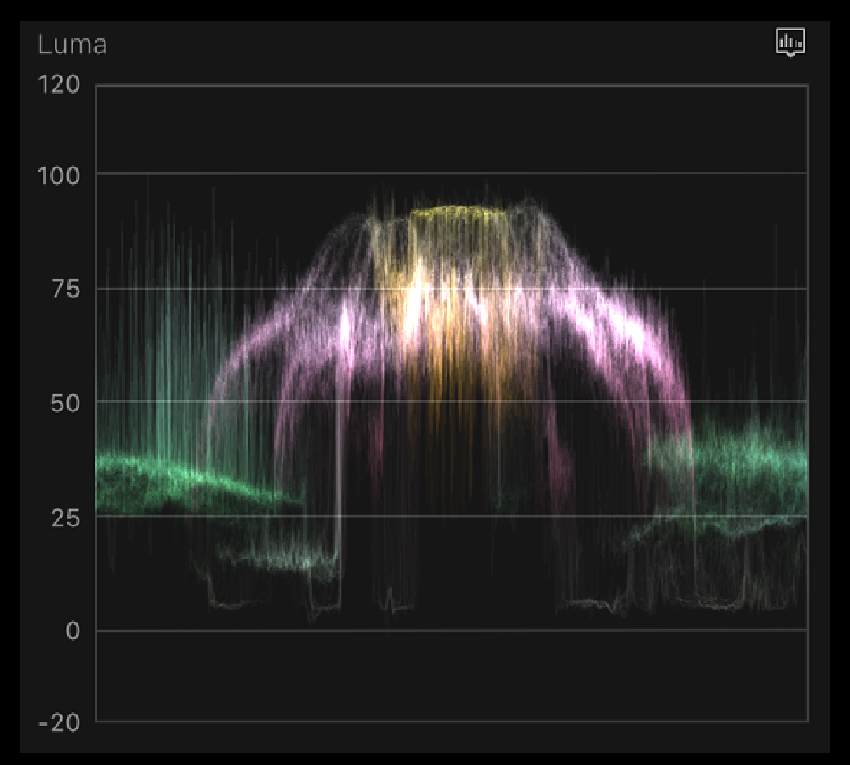

How can spatial design, explore complex ideas in new ways?
This was the question I asked myself when I started this case study. Exploration through touch is undeniably essential to the human experience.
Wearable headsets have unlocked a remarkable ability to materialize abstract digital concepts into the space around us. We can now 'hold' and 'touch' what was before stuck behind a screen. In this case study, I leverage the unique aspects of spatial interfaces to delve deep into a concept in a way 2D design never could.
This case study harnesses the power of spatial data visualization to delve into the nuances and intricacies of color in a way that feels organic and engaging.
For this project I decided to center my focus on the deceptively deep world of color. Color is a completely man-made quality created by our brains to help us understand the world around us. We as humans have developed intricate methods to deconstruct, classify, and manipulate color.
Moreover, color is commonly broken down into three-dimensional systems—RGB, CMY, HSB— luckily mirroring the three spatial dimensions. As such, color lends itself very well to spatial design.
Common Color Breakdowns
There exists many designs that simplify 3D color values into 2D interfaces, often forced to make various compromises based on context. Due to the 3D nature of this project, I have found myself in a unique position to push past the boundaries of flat color pickers.
2D Color Picker Variations
Narrowing Down On Form
Initially, I have planned on creating a cubed color-space, mapping Hue, Saturation, and Brightness to the XYZ axis. While this approach showcased promising results, it became clear that it fell short when dealing with the looping qualities of hue.
3D Cubed Color-Space
Unlike saturation and value that both have minimums and maximums, hue is a continuous value. With that in mind, I pivoted towards a cylindrical color-space design. This new design was comprised of a disc shaped cross section of color-space which I then mounted on a sliding axis of brightness. Goodbye color cube, hello color tube!
3D Cylindrical Color-Space
Once the form was established, the next natural step was to refine the interaction design to feel more responsive and natural. I introduced a grabbable focal point used to select color and gave it a 'hover' and 'grabbed' state. The subtle addition of caps to the end of the brightness axis imply boundaries to the color wheel's motion and add to the overall physicality of the interface. I then mounted the entire interface on a lazy-susan rotation tool to make viewing the interface from all sides easier.
Refined Color Selection Interface
Below is uncut footage of me utilizing the color selection tool to adjust colors on a model.
Blending Colors
If colors are represented as points in color-space, then the next logical step was to look at color blends as lines or curves from one point to another. Basic interpolations from one HSB value to another resulted in a straight line as expected.
HSV Linear interpolation
In many instances, however, linear interpolations of RGB values result in more favorable color combinations, making it the go-to approach. During my analysis, I charted the trajectory of a linear RGB blend in color-space, which led to some unexpected curve patterns.
RGB Linear Blending
To better understand this behavior, it is important to gain an insight into the interrelations between hue, saturation, and value and the RGB channels of a color. I visualized these relationships by charting the trajectories of colors when adding or removing red, green, or blue. This results in a shifting RGB axis that shows where the curve patterns originate from.
RGB Axis in Color-Space
I also thought it would be interesting to explore compound gradients by adding more nodes of manipulation along each blend of color. Below is uncut footage of different ways to blend color as well as compound gradient manipulation.
Exploring Images
It was at this point that I recognized the inherent value in exploring concepts spatially and was motivated see how deep this rabbit hole could go.
As a next step, I sampled colors directly from the pixels of a photo into point clouds within color-space. This allowed me to analyze and visualize the color distribution of an image in a three-dimensional context. This opened up new avenues for understanding and exploration.
It's fascinating to note that this approach shares similarities with two familiar tools used in photo and film grading: the vector scope, which is used to visualize the distribution of color in an image, and the waveform monitor which breaks down the brightness of an image.
A Vectorscope

A Waveform Monitor
We can also use this visualization to better understand some of the more complicated qualities of an image such as contrast and lightness. To do this, I implemented a method of displaying a layer from Photoshop directly into color-space. This allowed for the visualization of any adjustments in real-time.
Each setting's effect on the color-space became readily apparent, with distinct regions being manipulated in unique ways. For example, modifying the hue value resulted in a rotational shift of colors around the center pole, while adjusting the contrast appeared to compress or expand the color spectrum in relation to some focal point.
Tactile Image Processing
Spatial representations of color proved to be helpful in presenting the complex interplay of color systems in natural ways. As someone who is a big supporter of learning through play and experimentation, I sought to improve this tool farther and allow the direct, tactile manipulation of colors.
I modified my visualizer to allow me to pinch and pull parts of the color-cloud and watch as the source image adjusts accordingly. Below is uncut footage of realtime, tactile image processing.